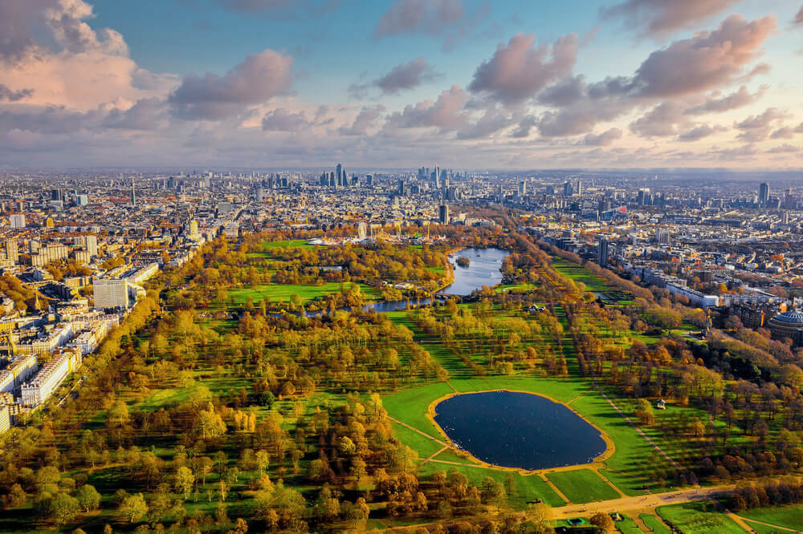
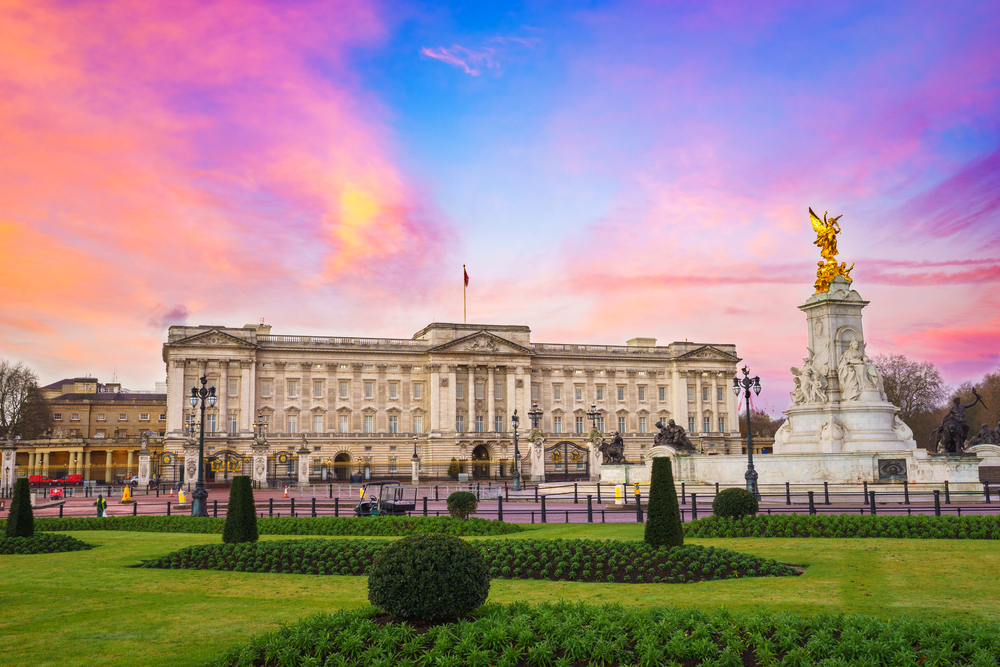

สถานที่ท่องเที่ยวใกล้เคียง
สำรวจแลนด์มาร์คสำคัญระดับโลกที่รายล้อมอยู่รอบตัวคุณ

Hyde Park
สวนสาธารณะที่ใหญ่และมีชื่อเสียงที่สุดในใจกลางลอนดอน พื้นที่สีเขียวขนาดใหญ่ที่เหมาะสำหรับการเดินเล่นพักผ่อน ปั่นจักรยาน หรือพายเรือในทะเลสาบ Serpentine ท่ามกลางธรรมชาติที่งดงาม
นำทาง north_east
Harrods
ห้างสรรพสินค้าสุดหรูระดับตำนานที่มีชื่อเสียงไปทั่วโลก สวรรค์ของนักช้อปที่รวบรวมสินค้าแบรนด์เนมชั้นนำ แฟชั่น เครื่องประดับ และโซน Food Hall ที่เต็มไปด้วยอาหารพรีเมียมจากทั่วโลก
นำทาง north_east
Buckingham Palace
ที่ประทับอย่างเป็นทางการของพระมหากษัตริย์แห่งสหราชอาณาจักร สัมผัสความยิ่งใหญ่ของสถาปัตยกรรมและพลาดไม่ได้กับการชมพิธีผลัดเปลี่ยนเวรยาม (Changing of the Guard) ที่เป็นเอกลักษณ์
นำทาง north_east
Natural History Museum
พิพิธภัณฑ์ประวัติศาสตร์ธรรมชาติที่สวยงามตระการตาทั้งภายนอกและภายใน ตื่นตากับโครงกระดูกไดโนเสาร์ขนาดมหึมาและนิทรรศการที่รวบรวมความมหัศจรรย์ของโลกธรรมชาติไว้ในที่เดียว
นำทาง north_east